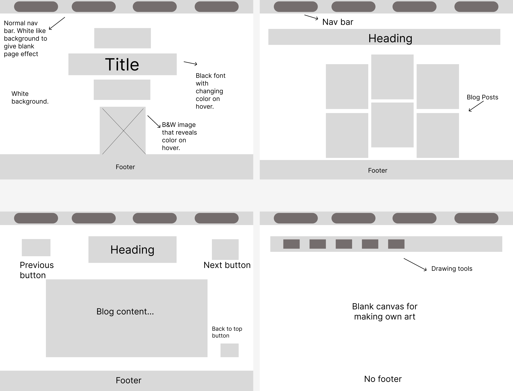

Design Process
For this website i wanted to create a website coloring book which starts off with a minimal aesthetic and becomes colorful as the user interacts and engages with it. The site in and of itself was/is to be considered internet art.
Below is my planning process for the website where i created a mood board and concept board to jot down my ideas and the vision i had in mind for the site. I wanted to have a site where it starts off plain in black and white and when the user interacts with the site and clicks on buttons it leaves color as they go. I feel that this gives the illusion that the user starts off on an plain page and they add color to it to make it look pretty. I also wanted elements such as hover effets that reveal color behind a B&W or blurry image. The hover effects would have added to the visual elements of the site as they would have had different shapes. The concept board shows examples and explanation of the different elements of the site. A critical reflection can be found in the blog section.
Below i have rough sketches of the ideas i had for the UI of each page of the site.
WireFrames
First image- Home page.
Second image(to the right)- Blogs.
Third image(bottom left)- Each blog page.
Last image- Net Art
A critical reflection can be found under the blogs section where the design process of UI/UX is explained.
